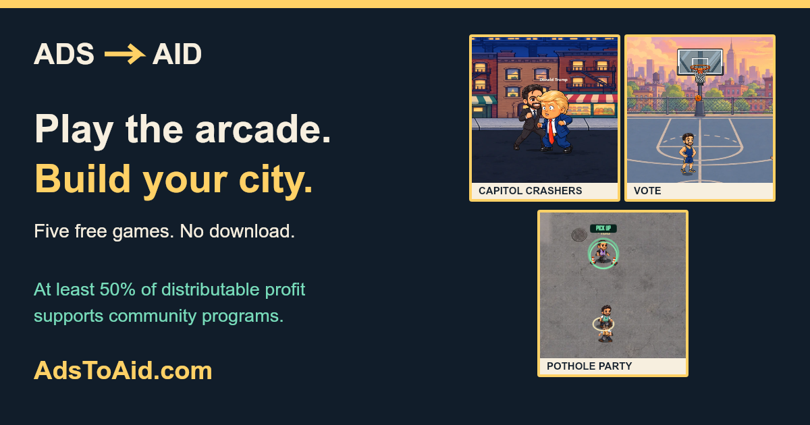

ADS → AID · LAUNCH PACKAGE V1
Play the arcade.
Build your city.
Two review cuts using Tony's saved ElevenLabs voice, actual gameplay and the existing Makko artwork. Watch first; the download links are below each film.
Launch film · 38 seconds
Teaser · 15 seconds
Share image · 1200 × 630

Download share image · Download all launch copy

Ready-to-adapt launch post
AdsToAid is live: five free arcade games, one neighborhood of your own. Play a cabinet. Earn supplies. Choose what grows next. At least half of distributable profit supports community programs. My cut gets smaller as I reach the published milestones, down to 1%. Yes, my first milestone is paying off my house. Apparently the bank doesn't accept high scores. Play free: https://adstoaid.com/#library Giving policy: https://politicalarcades.com/community-pot/
Review notes and full posting kit
Vocal tone and pronunciation still need Tony's listening review. Both complete videos passed decode checks and their scripts were checked with local speech recognition. Gameplay stays free of narration subtitles; optional caption files cover graphic cards. Housing Stack and the city appear as still captures.
ADSTOAID — LAUNCH COPY Recommended title I built an arcade that gives back. Alternate titles Five free games. One city to build. Your high score could do more. X / Threads / Bluesky I built five free arcade games that feed one city. Play, earn supplies, build your neighborhood. AdsToAid commits at least 50% of distributable profit to community programs. No download or sign-up. Come try it: https://adstoaid.com/#library Instagram / TikTok / Shorts I built an arcade. It has five free games, a city you build with what you earn, and a giving promise: at least half of distributable profit supports community programs. My cut gets smaller as I reach the published milestones, down to 1%. Yes, my first milestone is paying off my house. Apparently the bank doesn't accept high scores. Pick a cabinet. Bring home supplies. Build your neighborhood. Play free at AdsToAid.com. No download. No sign-up. Game supplies are fictional; real giving is separate. Distributable profit is after documented project costs and disclosed reserve movements. Full policy: https://politicalarcades.com/community-pot/ Longer launch post / video description AdsToAid is live: five free arcade games, one neighborhood of your own. Shoot hoops in VOTE. Clear rows in Housing Stack. Repair streets in Pothole Party. Play Every Kid Can See or Capitol Crashers. Each game earns supplies you can spend on your city. The supplies are pretend. The giving promise isn't: at least 50% of distributable profit supports community programs. That share rises to 99% as I reach the published payout milestones. My personal milestone purchases come from my share, not operating expenses. If the site gives less than $50 in a month, I personally cover the difference so total monthly giving reaches $50. My top-up goes to a local Seattle cause. This is a commitment, not a claim that donations have already been delivered. Play: https://adstoaid.com/#library Giving policy, documented costs, reserve rules and reports: https://politicalarcades.com/community-pot/ No download or sign-up. Your city currently saves in this browser. Housing Stack and Every Kid Can See are in beta. Fan-made satire; no candidate or campaign endorsement. Copy friends can adapt My friend Tony built AdsToAid: five free arcade games that earn supplies for a city you build. The project commits at least half of distributable profit to community programs. Go try a cabinet and tell him which one you get hooked on: https://adstoaid.com/#library Pinned comment Pick one cabinet and tell me which one you want more of. Game supplies build your in-game city; real giving is reported separately in the Community Pot. https://adstoaid.com/#library Suggested release sequence 1. Post the 38-second film from Tony's account with the longer launch caption. 2. Use the 15-second teaser for Stories, Reels and follow-up posts. Put the playable arcade link in the location supported by that platform. 3. Give friends the share image, teaser and optional copy above after the main post is live, so their shares point to a real post and the arcade. 4. Reply to early players and ask which cabinet they returned to. Reuse an actual player moment, with permission, for the next post. No posts or messages have been sent by this task.
Unlisted review page; not linked from site navigation. No social posts or messages have been sent.